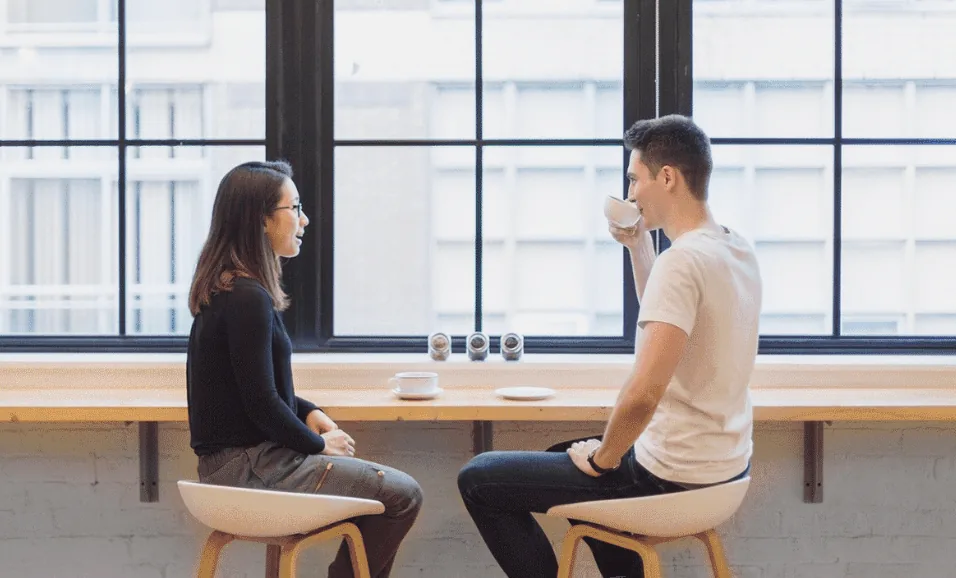
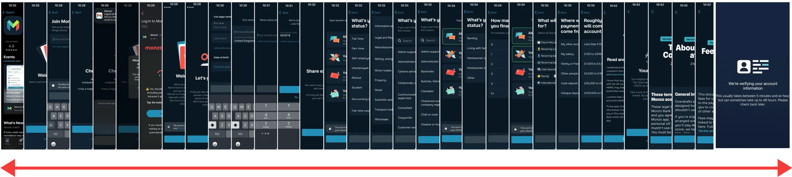
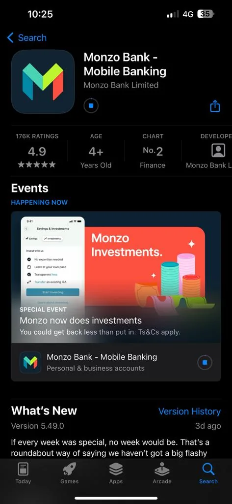
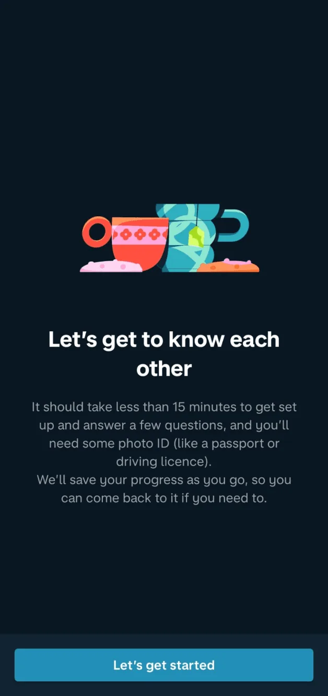
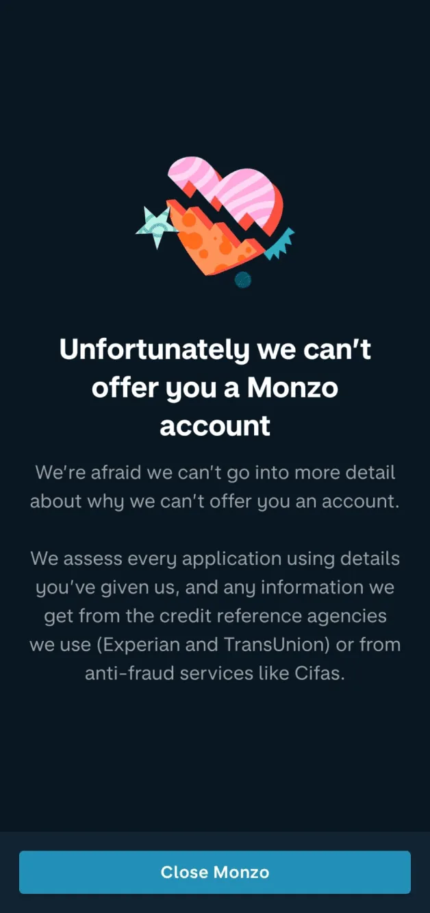
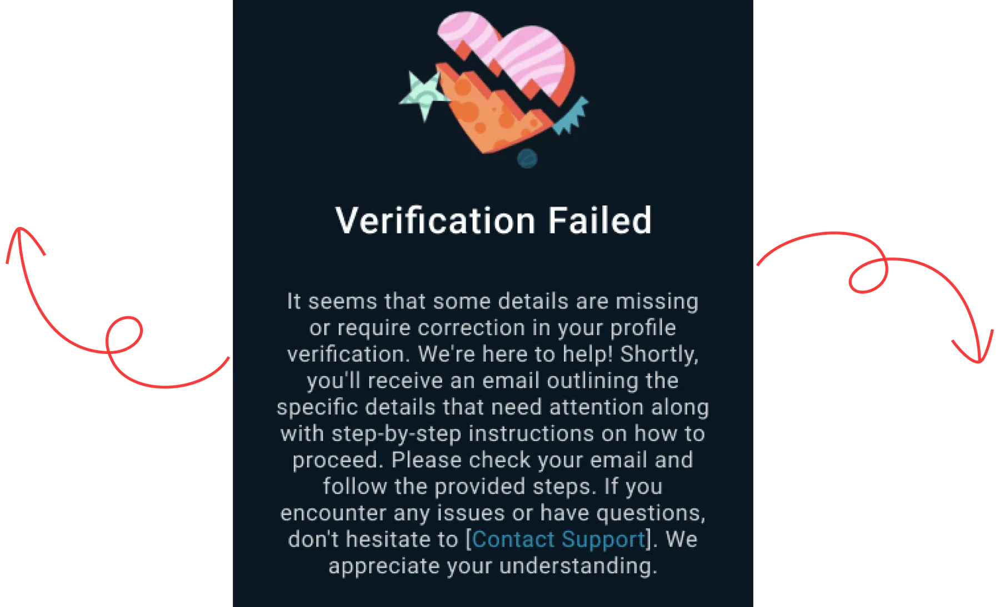
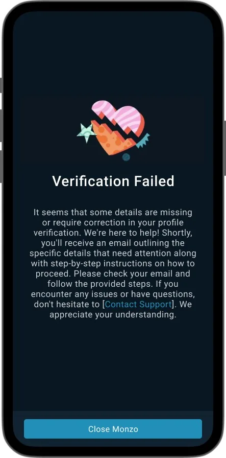
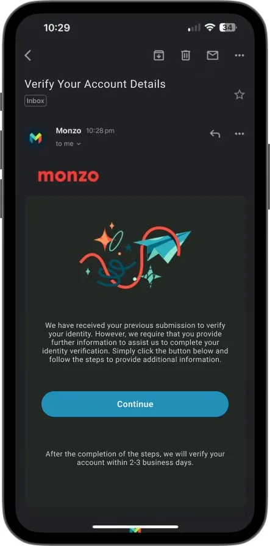
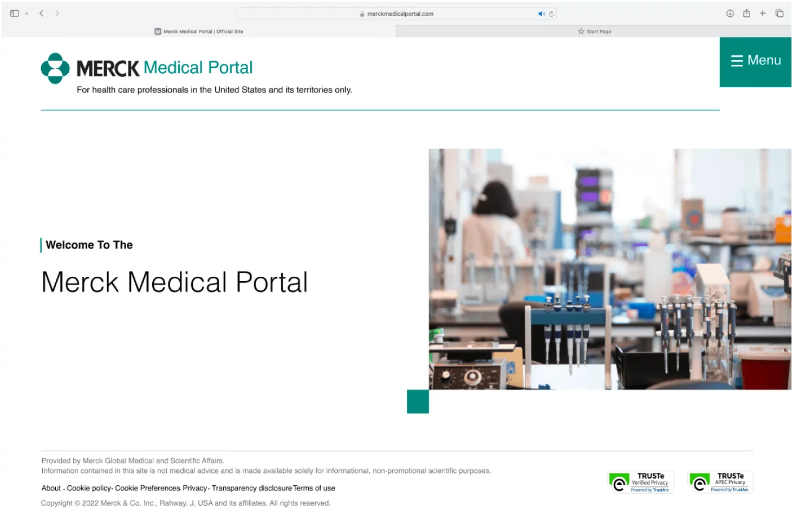

Monzo
Mobile appFintechSelf-initiated

About the project
A sign-up that never leaves you guessing.
When I arrived in the UK as an international student, my Monzo application ended in a rejection with no explanation. I turned that experience into an eight-week case study.
I ran the research, heuristic evaluation, personas and redesign myself, focusing on what happens when account verification fails.
- Role
- Product Designer, Visual Designer, User Researcher
- Duration
- 8 weeks
- Tools
- Figma
- Platform
- iOS · Android
A personal frustration became a case study.
Background
As a newcomer and international student in the UK, my attempt to open a Monzo account ended in disappointment. After usability issues and an unhelpful support experience, I decided to redesign the experience myself.
The focus: fix usability problems, simplify account creation and add features that raise satisfaction to industry standards.
Problem statement
Monzo offers current accounts, budgeting tools and real-time transaction tracking, yet users run into usability issues that hurt satisfaction. The goal is to fix those pain points with targeted improvements and a more modern, streamlined experience.
Opportunity
The number of people moving to the UK to study or work has grown over the years, and every one of them needs a bank account soon after arriving.
Eight weeks, end to end.
Design process
- Discovery workshopGoals, scope, approach and research method
- User researchApp reviews, user interviews
- Understand users
- Competitive analysis
- Design thinking
- Design strategyUX opportunities, mood board, IA, task flows
- Experience designDesign solution
- Prototype
- Refine
Understanding the issue.
User research
In the exploration stage we wanted to understand the problem and why it mattered, so we ran both primary and secondary research.

- 1
User needs
Understand what users need from mobile banking, focused on the target audience.
- 2
Analyse
Identify and document pain points in the current app, especially account creation.
- 3
Review
Research current technology and accessibility standards for a diverse user base.
- 4
Engage
Gather feedback from Monzo users through surveys, interviews and forms.
Two people, one frustrating flow.
User personas
Noyal Claiton
Arrived in the UK for a master’s degree. Loves online shopping and new cuisines, and wants Monzo for everyday spending.
Goals
- A trusted banking app
- A user-friendly app
- Manage a student budget and savings
Pain points
- Too many steps
- Account rejected with no explanation
- No proper guidance
Motivation
- A simple interface for managing money
- Spending tracking for a student budget
- Easy savings
Akshitha
A civil engineer who loves design, art, hiking, badminton and online shopping.
Goals
- Strong security and fraud protection
- Spending insights and savings goals
- Reliable customer service
Pain points
- Unclear error messages
- Slow customer service
- Complicated banking procedures
Motivation
- Saves time
- Clear information
- Friendly UI
- Work-life balance
Where the current flow breaks.
Heuristic evaluation
- 0Not a usability problem
- 1Cosmetic only: fix if time allows
- 2Minor: low priority
- 3Major: high priority
- 4Catastrophe: fix before release
| Heuristic | Violation | Recommendation | Severity |
|---|---|---|---|
| 1. User control and freedomCan users navigate, correct errors and retry account creation easily? | Users have little control when they hit errors or a rejection, and there is no clear way to fix issues or try again. | Enhance user autonomyAdd error prompts with actionable steps, clear guidance on fixing issues, and let users retry without losing what they entered. | 4 |
| 2. Error preventionDoes the design prevent errors and let users correct mistakes? | There is no real-time feedback or prompts during data entry, which leads to mistakes and frustration. | Prevent errors proactivelyValidate inputs in real time, show inline errors that name the problem, and add tooltips and contextual help. | 3 |
| 3. Help users recognise, diagnose and recover from errorsDo error messages help users understand and resolve issues? | Users get no clear guidance or support when errors happen, leaving them unsure how to proceed. | Handle errors effectivelyExplain what went wrong and what to do next, with routes to help resources, support and self-service. | 3 |
Twenty minutes, then a dead end.
Current state
After investing their time in the sign-up process, users get an impersonal rejection with no reason or explanation. That gap between effort and outcome leads to frustration and a negative experience.

The full existing flow, 00:00 to 00:20



Drag or scroll sideways
Tell people what went wrong, and how to fix it.
Solution
Instead of a dead-end error, users get an email that explains the issue with step-by-step instructions to fix it, including links to re-upload documents or update details. They can resolve it at their own pace, and support contact details are always included.



Final thoughts.
Takeaways
- 1
Insights into user needs
A clear view of what the target audience needs from mobile banking.
- 2
Improvement opportunities
Documented pain points in the current app, especially account creation.
- 3
Design recommendations
Aligned with current technology and accessibility standards.
- 4
User-centric approach
Built on feedback from real Monzo users.
- 5
Continuous improvement
Keep iterating with feedback and testing so the app keeps meeting evolving needs.
Next project
Merck
